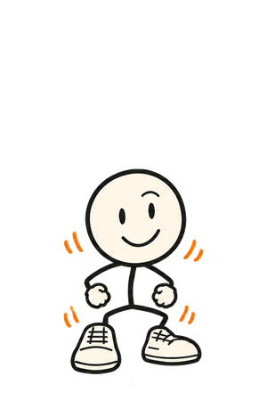
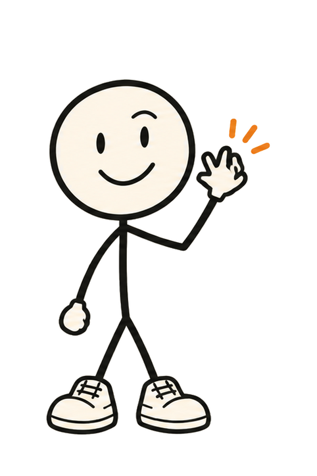
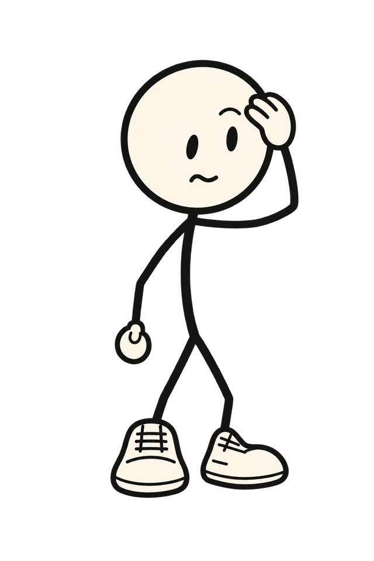
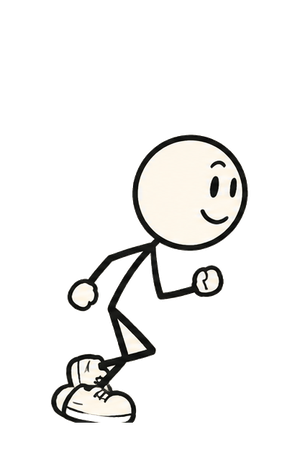
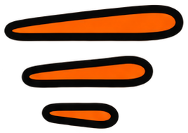
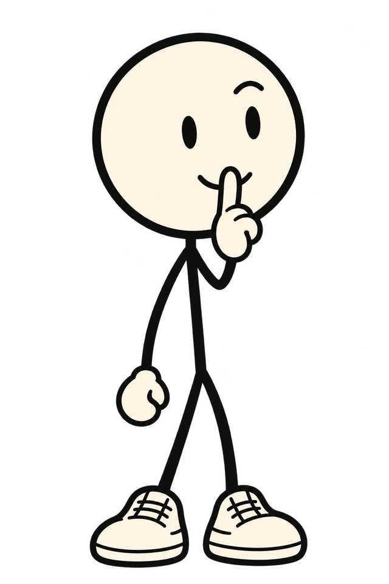
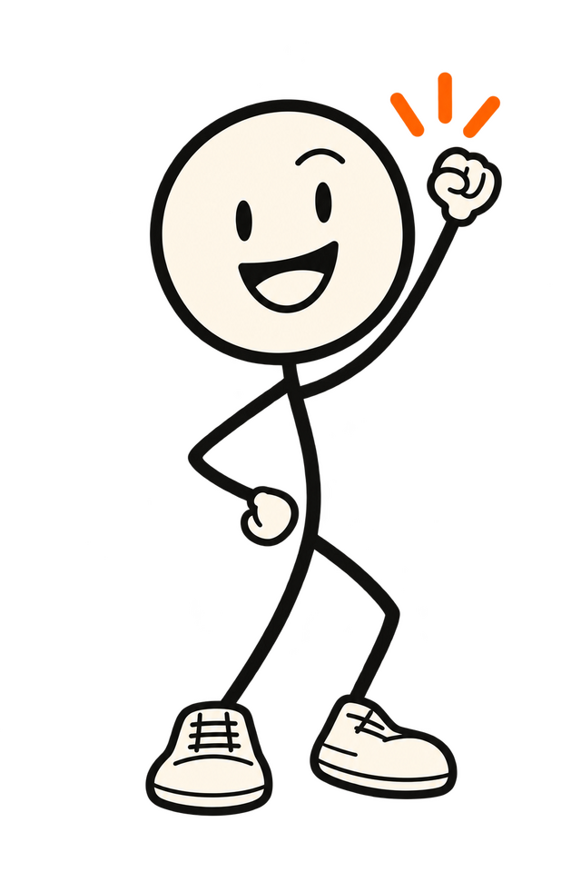
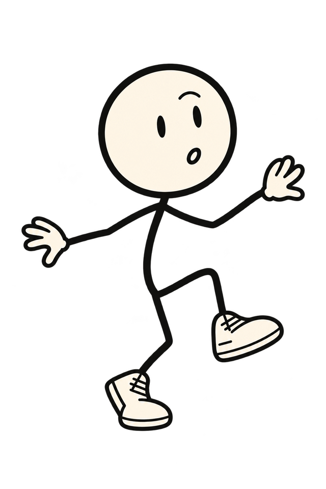
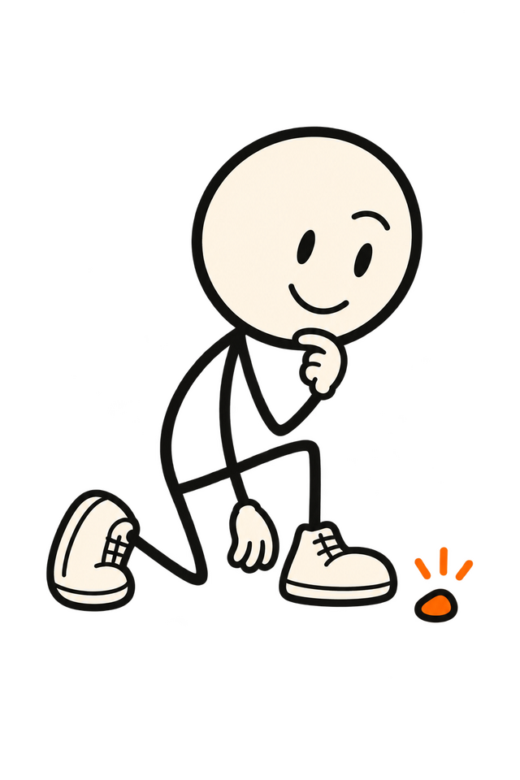
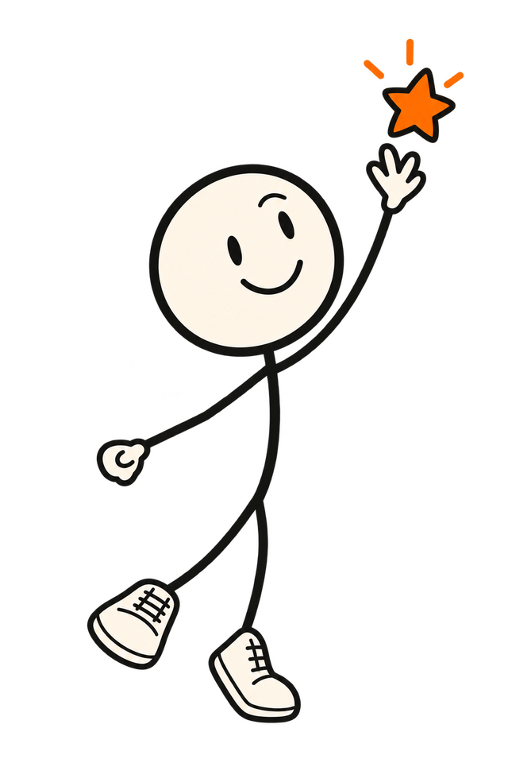

18 · The hero as a scene
Load, idle, hover or tap, selected. Doddy reacts to every object with a pose from the pack and one line. On phones, one tap shows the reaction, a second opens the moment.



The paper is empty for one frame. Doddy pops in at 0 ms (pop-in strip, 4 frames, 320 ms), then the seven objects drop in clockwise from the alarm, 60 ms apart (translateY -40 px → 0 and opacity, 300 ms, ease-out, the site's cubic-bezier(.2,.8,.2,1)). At 700 ms he waves (wave strip, 5 frames, 400 ms) and "Pick one." underlines itself (the homepage's scribble reveal). Done at 900 ms. Reduced motion: everything is already in place; the scribble is drawn.

A drawing until you touch it. No drift, no bob, no blink: the motion budget says nothing loops, and a notebook page holds still. The invitation is the handwriting and the cursor changing over an object. If the owner wants life at rest, the one allowed thing is a blink from the pack's blink sheet every 4 to 6 s; it is listed as an open decision, not drawn here.

150 ms. The object lifts 5 px and gets its orange edge (the chapter buttons' hover), its handwritten label appears, Doddy swaps pose and line (image swap, no tween; the line is a crossfade of 120 ms). Leaving restores the wave after 300 ms, so a cursor crossing the ring doesn't make him flicker. Keyboard focus does exactly the same, with the site's focus ring.


Click, Enter or second tap. The object keeps its orange underline, Doddy runs out of the ring to the right (run strip, 500 ms) and the page scrolls to the moment (600 ms, ease-out); he arrives there with that moment's own entrance (beat 1 of mockup 16). Objects are links, so the URL carries the moment (#late) and a shared link opens on it. Reduced motion: no run, instant scroll.
22:30 · Don't let me forget

No hover on a phone, so the first tap is the hover: the label shows, Doddy reacts, the object stays marked. A tap elsewhere clears it. Objects are 70 px, well over the 44 px minimum, and the ring is 300 px wide at 390 px.
Second tap on the same object opens the moment, as the click does on desktop. "Start the day" under the headline is the plain route for people who don't want to pick: it scrolls to 08:45 and Doddy walks in there. The ring never traps focus; Tab moves through the seven links in reading order.
Oh. That one.
08:45 · facepalm

Go on. I'm listening.
10:20 · listening

Lunch. Finally.
13:00 · fist pump

Got your passport?
Away · tiptoe

I'll find it. Your words.
18:45 · kneeling inspect

Top shelf. Of course.
20:15 · reaching high
I'll remind you. Quietly.
22:30 · shush
Seven lines, all answer-first and about the situation; none at the visitor. They are new words, so they sit in the proposed-copy list (COPY.md, Phase 2) until approved. Poses are swapped images; no tween, no rig.